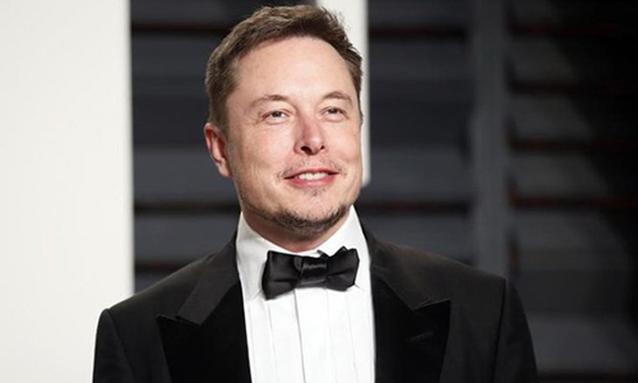

Elon Musk
SpaceX ve Tesla'nın Kurucusu
Mühendis, endüstriyel tasarımcı, teknoloji girişimcisi ve hayırseverdir. Doğduğu yer olan Güney Afrika Cumhuriyeti dışında, Kanada ve ABD vatandaşıdır ve günümüzde hâlen 20 yaşında göç ettiği ABD'de yaşamaktadır. Elon Musk aynı zamanda SpaceX şirketinin kurucusu, CEO'su ve mühendislik ile tasarım ofisleri şefi; erken yatırımcı, Tesla şirketinin CEO'su ve ürün mimarı; The Boring Company şirketinin kurucusu; Neuralink'in ile OpenAI'nin kurucu ortağı ve ilk eş başkanıdır.